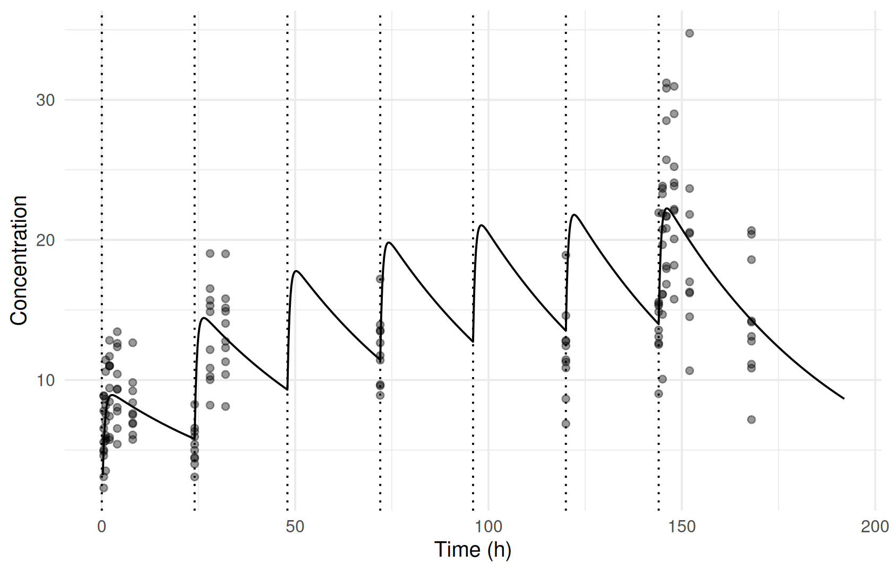

addl <- ferx_example("warfarin_addl")
dosing_dir <- book_tempdir("dosing")
addl_data <- read.csv(addl$data, na.strings = ".")
filter(addl_data, ID == 1) |> select(ID, TIME, DV, EVID, AMT, II, ADDL)
#> ID TIME DV EVID AMT II ADDL
#> 1 1 0.0 NA 1 100 24 6
#> 2 1 0.5 4.8991 0 NA 0 0
#> 3 1 1.0 8.6395 0 NA 0 0
#> 4 1 2.0 7.4206 0 NA 0 0
#> 5 1 4.0 10.4268 0 NA 0 0
#> 6 1 8.0 7.6090 0 NA 0 0
#> 7 1 24.0 6.3220 0 NA 0 0
#> 8 1 28.0 10.0212 0 NA 0 0
#> 9 1 32.0 11.3024 0 NA 0 0
#> 10 1 72.0 9.5836 0 NA 0 0
#> 11 1 120.0 12.4406 0 NA 0 0
#> 12 1 144.0 15.4449 0 NA 0 0
#> 13 1 145.0 20.7495 0 NA 0 0
#> 14 1 146.0 28.5110 0 NA 0 0
#> 15 1 148.0 23.8443 0 NA 0 0
#> 16 1 152.0 20.4556 0 NA 0 0
#> 17 1 168.0 10.8486 0 NA 0 0Dosing regimens and exposure metrics
Where you are
Most earlier chapters used a single dose per subject. Real studies repeat doses, sample at steady state, infuse, or give doses into absorption processes. This chapter shows how these regimens are written in the dataset, and how ferx computes exposure metrics per subject and per dosing interval with [derived].
WarningMaturity
The dataset columns used here are part of the stable ferx data format. [derived] and the built-in absorption models are beta in ferx-core. See feature maturity.
The data
In warfarin_addl, each subject has a single dose record that stands for seven daily doses: II = 24 is the interval and ADDL = 6 the number of additional doses. Samples are taken on days 1, 2, 4, 6, 7 and 8:
Minimal runnable call: repeated doses
A dataset with ADDL fits like any other:
fit_addl <- ferx_fit(addl$model, addl$data, verbose = FALSE)
fit_addl$theta
#> TVCL TVV TVKA
#> 0.220865 10.594506 1.668516ferx expands the record into seven doses before fitting. Writing the seven dose rows out explicitly gives the same fit:
dose_rows <- filter(addl_data, EVID == 1)
explicit_doses <- dose_rows[rep(seq_len(nrow(dose_rows)), dose_rows$ADDL + 1), ] |>
group_by(ID) |>
mutate(TIME = TIME + (row_number() - 1) * II, II = 0, ADDL = 0) |>
ungroup()
explicit <- bind_rows(explicit_doses, filter(addl_data, EVID == 0)) |> arrange(ID, TIME, desc(EVID))
explicit_file <- file.path(dosing_dir, "warfarin_explicit_doses.csv")
write.csv(explicit, explicit_file, row.names = FALSE, na = ".")
c(addl = fit_addl$ofv, explicit_rows = ferx_fit(addl$model, explicit_file, verbose = FALSE)$ofv)
#> addl explicit_rows
#> 437.3381 437.3381Reading the result: time after dose and exposure per subject
sdtab has two time columns besides TIME: TAFD, the time after the first dose, and TAD, the time after the most recent dose, which restarts at each expanded dose. The model’s [derived] block uses them for exposure metrics:
invisible(ferx_model_get_section(addl$model, "derived"))
#> # [derived]
#> KE = CL / V
#> T_HALF = 0.6931472 / KE
#>
#> # TAFD uses the first dose time; TAD resets at each expanded dose
#> DAY = floor(TAFD / 24) + 1
#>
#> CMAX = max(IPRED)
#>
#> # Trough: minimum IPRED at dose time (TAD ~= 0 after ADDL expansion).
#> # 1e-10 absorbs floating-point residuals from modular arithmetic.
#> CMIN_TAU = min(IPRED, TAD < 1e-10)
#>
#> # Trough via window: last 4 h of the interval (no precision concern)
#> CMIN_LATE = min(IPRED, TAD > 20)
#>
#> AUC_TAU = integral(IPRED, window=24, anchor=0, step=0.1)
fit_addl$sdtab |>
filter(ID == 1) |>
select(TIME, TAFD, TAD, DAY, IPRED, CMAX, CMIN_TAU, CMIN_LATE)
#> TIME TAFD TAD DAY IPRED CMAX CMIN_TAU CMIN_LATE
#> 1 0.5 0.5 0.5 1 5.250084 21.80407 5.690902 13.92952
#> 2 1.0 1.0 1.0 1 7.467992 21.80407 5.690902 13.92952
#> 3 2.0 2.0 2.0 1 8.712081 21.80407 5.690902 13.92952
#> 4 4.0 4.0 4.0 1 8.658896 21.80407 5.690902 13.92952
#> 5 8.0 8.0 8.0 1 7.970254 21.80407 5.690902 13.92952
#> 6 24.0 24.0 0.0 2 5.690902 21.80407 5.690902 13.92952
#> 7 28.0 28.0 4.0 2 13.890178 21.80407 5.690902 13.92952
#> 8 32.0 32.0 8.0 2 12.779037 21.80407 5.690902 13.92952
#> 9 72.0 72.0 0.0 4 11.196053 21.80407 5.690902 13.92952
#> 10 120.0 120.0 0.0 6 13.200035 21.80407 5.690902 13.92952
#> 11 144.0 144.0 0.0 7 13.655015 21.80407 5.690902 13.92952
#> 12 145.0 145.0 1.0 7 20.838532 21.80407 5.690902 13.92952
#> 13 146.0 146.0 2.0 7 21.804073 21.80407 5.690902 13.92952
#> 14 148.0 148.0 4.0 7 21.211078 21.80407 5.690902 13.92952
#> 15 152.0 152.0 8.0 7 19.508672 21.80407 5.690902 13.92952
#> 16 168.0 168.0 24.0 8 13.929523 21.80407 5.690902 13.92952CMAX and the two troughs have one value per subject. CMIN_TAU filters on TAD < 1e-10, the samples taken at dose times (24, 72, 120 and 144 hours; the tolerance absorbs rounding). CMIN_LATE filters on the last 4 hours of an interval, which here only the sample at 168 hours meets.
The typical profile over the whole regimen comes from ferx_predict() on a design with the same dose record and a fine time grid (Simulating scenarios):
design <- data.frame(ID = 1, TIME = c(0, seq(0.25, 192, by = 0.25)), DV = NA,
EVID = c(1, rep(0, 768)), AMT = c(100, rep(NA, 768)), CMT = 1, RATE = 0,
MDV = c(1, rep(0, 768)), II = c(24, rep(0, 768)), ADDL = c(6, rep(0, 768)))
design_file <- file.path(dosing_dir, "addl_design.csv")
write.csv(design, design_file, row.names = FALSE, na = ".")
typical <- ferx_predict(addl$model, design_file, fit = fit_addl)
ggplot(typical, aes(TIME, PRED)) +
geom_line() +
geom_point(data = filter(addl_data, EVID == 0), aes(TIME, DV), alpha = 0.4) +
geom_vline(xintercept = seq(0, 144, by = 24), linetype = "dotted") +
labs(x = "Time (h)", y = "Concentration")
Options that matter
Dose records use these columns of the ferx data format (Preparing and checking the analysis dataset):
| Column | Meaning |
|---|---|
EVID |
1 for a dose; 2 other event, 3 reset, 4 reset and dose |
AMT, CMT
|
Amount and the compartment it goes into |
RATE |
0 for a bolus; a positive rate for a zero-order input over AMT / RATE
|
II, ADDL
|
Interval and number of additional doses after this one |
SS |
1: the dose is the last of an infinite series at interval II (steady state) |
Time quantities available in [derived] and in [odes]:
| Name | Meaning |
|---|---|
TIME |
Time in the dataset |
TAFD |
Time after the first dose |
TAD |
Time after the most recent dose (steady-state aware) |
[derived] aggregates and integrals for exposure metrics, with the filters used in this chapter:
| Expression | Result |
|---|---|
max(IPRED), tmax(IPRED), min(IPRED)
|
One value per subject over the observation rows |
min(IPRED, TAD < 1e-10) |
The same, over the rows where the filter holds (NaN if none) |
integral(IPRED, from=0, to=72) |
Area over a fixed interval |
integral(X, window=24, anchor=0, step=0.1) |
One area per dosing window |
integral(DV, from=0, to=72) |
Area of the observations, at the observation times |
The ferx-core data format and [derived] pages give the full rules.
Variants
Steady state
warfarin_ss samples one dosing interval of a once-daily regimen at steady state. The dose record carries SS = 1 and II = 24, and the concentrations are higher than after a single dose:
ss <- ferx_example("warfarin_ss")
ss_data <- read.csv(ss$data, na.strings = ".")
filter(ss_data, ID == 1)
#> ID TIME DV EVID AMT CMT RATE MDV SS II
#> 1 1 0.0 NA 1 100 1 0 1 1 24
#> 2 1 0.5 23.3448 0 NA 1 0 0 0 0
#> 3 1 1.0 25.9891 0 NA 1 0 0 0 0
#> 4 1 2.0 26.7357 0 NA 1 0 0 0 0
#> 5 1 4.0 30.6482 0 NA 1 0 0 0 0
#> 6 1 8.0 23.8695 0 NA 1 0 0 0 0
#> 7 1 12.0 26.1273 0 NA 1 0 0 0 0
#> 8 1 24.0 15.8599 0 NA 1 0 0 0 0
fit_ss <- ferx_fit(ss$model, ss$data, verbose = FALSE)
fit_ss$theta
#> TVCL TVV TVKA
#> 0.153102 8.963594 1.611488An SS = 1 dose stands for an infinite series of earlier doses. A long explicit run-in gives the same predictions. Here 30 daily doses precede the sampled interval:
run_in <- ss_data |>
mutate(TIME = ifelse(EVID == 0, TIME + 30 * 24, TIME), SS = 0, ADDL = ifelse(EVID == 1, 30, 0))
run_in_file <- file.path(dosing_dir, "warfarin_run_in.csv")
write.csv(run_in, run_in_file, row.names = FALSE, na = ".")
steady <- ferx_predict(ss$model, ss$data, fit = fit_ss)
explicit_run_in <- ferx_predict(ss$model, run_in_file, fit = fit_ss)
head(data.frame(TIME = steady$TIME, steady_state = steady$PRED, run_in = explicit_run_in$PRED), 7)
#> TIME steady_state run_in
#> 1 0.5 28.20589 28.20579
#> 2 1.0 30.71017 30.71007
#> 3 2.0 31.95331 31.95321
#> 4 4.0 31.29640 31.29631
#> 5 8.0 29.24627 29.24618
#> 6 12.0 27.31487 27.31479
#> 7 24.0 22.25276 22.25270
max(abs(steady$PRED / explicit_run_in$PRED - 1))
#> [1] 0.000003568003Exposure per dosing window
AUC_TAU = integral(IPRED, window=24, anchor=0, step=0.1) gives one area per 24-hour window. With IPRED, the values on the fine grid are taken from the nearest observation, so the result depends on the sampling (Model states in [derived]). An integral over the model state, compartments[1] (the central concentration in this analytical model), evaluates the model on the grid instead. The comparison below adds that column and computes the exact area of each window for subject 1 from its individual parameters:
IPRED, from the model state, and exact.
state_lines <- sub("AUC_TAU = integral(IPRED, window=24, anchor=0, step=0.1)",
"AUC_TAU = integral(IPRED, window=24, anchor=0, step=0.1)\n AUC_TAU_STATE = integral(compartments[1], window=24, anchor=0, step=0.1)",
readLines(addl$model), fixed = TRUE)
state_model <- file.path(dosing_dir, "warfarin_addl_state_auc.ferx")
writeLines(state_lines, state_model)
fit_state <- ferx_fit(state_model, addl$data, verbose = FALSE)
p <- filter(fit_state$individual_estimates, ID == "1")
ke <- p$CL / p$V
concentration <- function(t) {
sapply(t, function(time) sum(sapply(seq(0, 144, by = 24), function(dose_time) {
tad <- time - dose_time
if (tad <= 0) 0 else 100 * p$KA / (p$V * (p$KA - ke)) * (exp(-ke * tad) - exp(-p$KA * tad))
})))
}
distinct(filter(fit_state$sdtab, ID == 1), DAY, AUC_TAU, AUC_TAU_STATE) |>
mutate(AUC_EXACT = sapply(DAY, function(day) integrate(concentration, (day - 1) * 24, day * 24)$value))
#> DAY AUC_TAU AUC_TAU_STATE AUC_EXACT
#> 1 1 173.9020 172.0675 172.0806
#> 2 2 296.6108 279.2894 279.3025
#> 3 4 268.7053 383.0116 383.0247
#> 4 6 322.2378 420.7686 420.7816
#> 5 7 430.5146 429.3408 429.3538
#> 6 8 334.3086 262.4453 262.4452The state integral matches the exact areas and rises as the drug accumulates. The IPRED integral does not: the day-4 window, with a single sample, even comes out below day 2. Windows are reported on the rows that fall in them, so days 3 and 5, which have no samples, have no row.
Filters without matching rows
warfarin_derived defines metrics for a multiple-dose study, but ships with the single-dose warfarin data. Aggregates whose filter matches no row are NaN: there is no sample at a dose time (CTROUGH) and none on day 14 (CMAX_D14). On the seven-dose data the trough is defined, and day 14 is still outside the study:
derived <- ferx_example("warfarin_derived")
invisible(ferx_model_get_section(derived$model, "derived"))
#> # [derived]
#> # Per-row: elimination rate and half-life
#> KE = CL / V
#> T_HALF = 0.6931472 / KE
#>
#> # Which dosing day (tau = 24 h)
#> DAY = floor(TAFD / 24) + 1
#> TAU_TIME = TAFD mod 24
#>
#> # Subject-level aggregates (one scalar per subject, repeated across rows)
#> CMAX = max(IPRED)
#> TMAX = tmax(IPRED)
#> # 1e-10 absorbs floating-point residuals when TAD is mathematically 0
#> CTROUGH = min(IPRED, TAD < 1e-10)
#> CMAX_D1 = max(IPRED, TAFD < 24)
#> CMAX_D14 = max(IPRED, TAFD >= 312 && TAFD < 336)
#>
#> # AUC over first 72 h (fine internal grid, 500 steps)
#> AUC_0_72 = integral(IPRED, from=0, to=72)
#>
#> # Periodic AUC: one value per 24-h dosing window
#> AUC_TAU = integral(IPRED, window=24, anchor=0, step=0.1)
#>
#> # DV-based AUC (observation times only -- no interpolation)
#> AUC_DV_72 = integral(DV, from=0, to=72)
fit_single <- ferx_fit(derived$model, derived$data, verbose = FALSE)
fit_repeated <- ferx_fit(derived$model, addl$data, verbose = FALSE)
metrics <- c("CMAX", "TMAX", "CTROUGH", "CMAX_D1", "CMAX_D14", "AUC_0_72", "AUC_DV_72")
bind_rows(single_dose = distinct(filter(fit_single$sdtab, ID == 1), across(all_of(metrics))),
seven_doses = distinct(filter(fit_repeated$sdtab, ID == 1), across(all_of(metrics))), .id = "data")
#> data CMAX TMAX CTROUGH CMAX_D1 CMAX_D14 AUC_0_72 AUC_DV_72
#> 1 single_dose 11.38329 4 NaN 11.383285 NaN 510.6520 506.8519
#> 2 seven_doses 21.80407 146 5.690902 8.712081 NaN 745.9969 669.8353AUC_DV_72 integrates the observations at their sampling times, so it is lower than the model-based area when sampling is sparse.
Doses into absorption processes
A dose into a compartment fed by a built-in absorption function (Absorption and bioavailability) can be a steady-state dose or an infusion. The dose then passes through the absorption process. ss_absorption gives an SS = 1 dose every 8 hours into first_order(ka=KA), and infusion_absorption infuses 100 at a rate of 25 into the same kind of model. Both are single-subject prediction examples:
ss_abs <- ferx_example("ss_absorption")
inf_abs <- ferx_example("infusion_absorption")
grep("d/dt", readLines(ss_abs$model), value = TRUE)
#> [1] " d/dt(central) = first_order(ka=KA) - CL/V*central"
read.csv(ss_abs$data, na.strings = ".")[1:2, ]
#> ID TIME DV EVID AMT CMT MDV II SS
#> 1 1 0.0 NA 1 100 1 1 8 1
#> 2 1 0.5 12.231 0 0 1 0 0 0
read.csv(inf_abs$data, na.strings = ".")[1:2, ]
#> ID TIME DV EVID AMT CMT RATE MDV
#> 1 1 0 NA 1 100 1 25 1
#> 2 1 1 0.30468 0 0 1 0 0A single first-order absorption route is also the analytical pk one_cpt_oral model, with the dose in its depot. Predicting both data files with that model gives the same concentrations. For the steady-state case, an explicit run-in of 60 doses does too:
analytical <- function(ka, file) {
writeLines(c("[parameters]", " theta TVCL(1.0, 0.01, 50.0)", " theta TVV(20.0, 0.5, 200.0)",
sprintf(" theta TVKA(%s, 0.005, 20.0)", ka), " omega ETA_CL ~ 0.0 FIX",
" sigma PROP_ERR ~ 0.01 (sd)", "", "[individual_parameters]", " CL = TVCL * exp(ETA_CL)",
" V = TVV", " KA = TVKA", "", "[structural_model]", " pk one_cpt_oral(cl=CL, v=V, ka=KA)", "",
"[error_model]", " DV ~ proportional(PROP_ERR)"), file)
file
}
ss_run_in <- read.csv(ss_abs$data, na.strings = ".") |>
mutate(TIME = ifelse(EVID == 0, TIME + 60 * 8, TIME), SS = 0, ADDL = ifelse(EVID == 1, 60, 0))
ss_run_in_file <- file.path(dosing_dir, "ss_absorption_run_in.csv")
write.csv(ss_run_in, ss_run_in_file, row.names = FALSE, na = ".")
data.frame(TIME = ferx_predict(ss_abs$model, ss_abs$data)$TIME,
steady_state_kernel = ferx_predict(ss_abs$model, ss_abs$data)$PRED,
analytical = ferx_predict(analytical(0.15, file.path(dosing_dir, "ss_analytical.ferx")), ss_abs$data)$PRED,
run_in_60_doses = ferx_predict(ss_abs$model, ss_run_in_file)$PRED)
#> TIME steady_state_kernel analytical run_in_60_doses
#> 1 0.5 12.23056 12.23056 12.23056
#> 2 1.0 12.40221 12.40221 12.40221
#> 3 2.0 12.63355 12.63355 12.63355
#> 4 4.0 12.73541 12.73541 12.73541
#> 5 6.0 12.48957 12.48957 12.48957
#> 6 7.9 12.04432 12.04432 12.04432
data.frame(TIME = ferx_predict(inf_abs$model, inf_abs$data)$TIME,
infusion_kernel = ferx_predict(inf_abs$model, inf_abs$data)$PRED,
analytical = ferx_predict(analytical(0.6, file.path(dosing_dir, "inf_analytical.ferx")), inf_abs$data)$PRED)
#> TIME infusion_kernel analytical
#> 1 1 0.3046785 0.3046785
#> 2 2 1.0071482 1.0071482
#> 3 4 2.8771566 2.8771566
#> 4 6 3.8508179 3.8508179
#> 5 10 3.6059222 3.6059222The two examples declare omega ETA_CL ~ 0.0 without FIX. That is fine for prediction, but a fit stops and asks for FIX or a positive starting variance (Variability: random effects, residual error and IOV):
Other dose records
-
Infusions into the central compartment:
RATE > 0on a dose into a compartment without an absorption process. No bundled ferx-r example uses a fixed-rate infusion into the central compartment. See the ferx-core data format page. -
Other events and resets:
EVID = 2records carry covariate changes or output times without a dose.EVID = 3resets the system, andEVID = 4resets and doses, for example between study periods. No bundled example uses them. -
Designs for simulation: dose records with
IIandADDLin a design dataset, as in Simulating scenarios.
Pitfalls
-
Aggregates and integrals use the observation rows.
CMAX, troughs andIPREDintegrals only see sampled times. Use integrals over model states, or predictions on a fine design, for model-based exposure. -
A filter can match nothing. The metric is then
NaN. Check the sampling design before reading aTAD- or day-based metric. -
Test for a dose time with a tolerance.
TAD < 1e-10rather thanTAD == 0. -
Steady state needs
II. AnSS = 1record usesIIas the interval. For doses into built-in absorption processes, ferx-core rejects steady state combined with an absorption lag time or azero_order()input (absorption).
Warnings you may see here
-
data_quality(warning): inconsistentADDL/IIrecords, or other dataset problems (Preparing and checking the analysis dataset).
Summary
-
IIwithADDLwrites repeated doses compactly; the fit is identical to explicit dose rows. -
SS = 1puts a dose at steady state; predictions match a long explicit run-in. -
TADandTAFDrestart per dose and count from the first dose; use them in[derived]filters. - Integrate model states for exposure per dosing window.
IPREDintegrals depend on the sampling. - Steady-state doses and infusions pass through built-in absorption processes.
Next: Censored observations (BLOQ) handles concentrations below the limit of quantification.
TipReference
- R help:
?ferx_fit,?ferx_predict - ferx-core: data format,
[derived], absorption